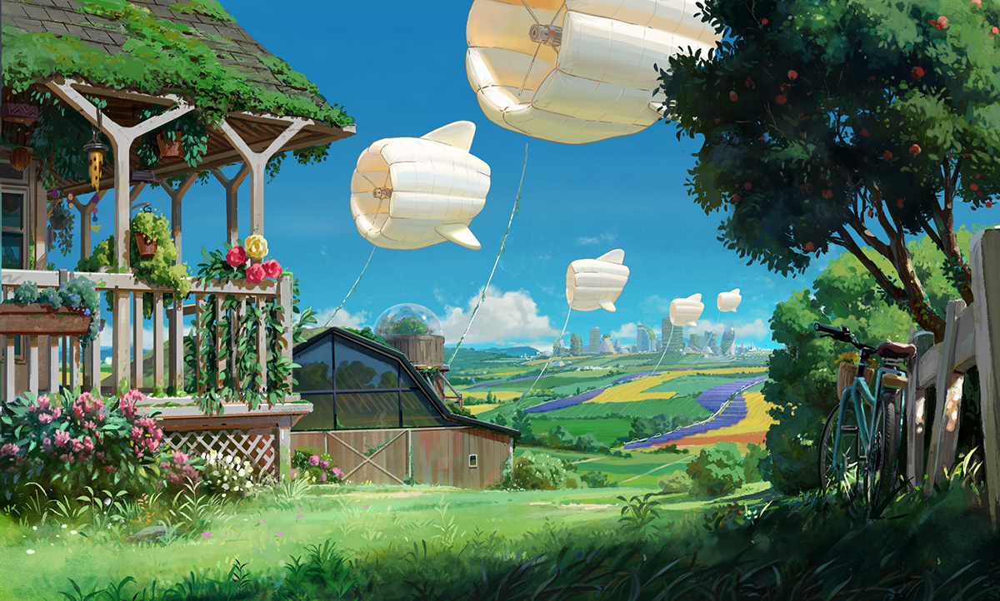

Visual Essay for DES222
The Anthropocene era, defined by profound human impact on the planet, has given rise to "Strange Weather" —a phenomenon where our activities increasingly shape climate and environmental patterns. Environmental sensing and data-driven art emerge as powerful tools to visualize and understand these shifts, transforming complex data into compelling narratives that highlight the urgency of addressing our influence on Earth's systems.
Technologies like environmental sensing and data-driven art are pivotal in raising awareness about climate change and environmental degradation. Artists like Natalie Jeremijenko and projects like "The Tempestries Project" transform climate data into visual narratives, making the abstract tangible. Jeremijenko's "Environmental Health Clinic" uses interactive installations to engage the public in environmental issues, while Tempestries translate temperature data into knitted artworks, highlighting local climate shifts over time.
In a future where AI and big data enable real-time environmental monitoring, art could evolve into a dynamic, responsive medium that translates live data into visually and emotionally impactful experiences. This fusion of technology and art could profoundly influence public perception, making climate change more relatable and urgent. Such compelling visualizations could drive stronger public engagement, potentially influencing policymakers to prioritize environmental sustainability.
Using technology to mediate our relationship with the environment raises ethical considerations, such as the risk of further detachment from nature, where digital representations may replace direct experiences. However, if thoughtfully implemented, these technologies can inspire action by making environmental issues more accessible and urgent. The challenge lies in balancing virtual experiences with real-world engagement, ensuring that technology enhances, rather than diminishes, our connection to the natural world.
Environmental sensing and data-driven art hold significant potential to shape the future by raising awareness and fostering better stewardship of our planet. These tools can make invisible environmental changes visible, sparking deeper understanding and action. However, challenges remain, such as ensuring accessibility, avoiding data manipulation, and balancing technological mediation with genuine connection to nature. Addressing these challenges is crucial for realizing their full potential in promoting sustainability.